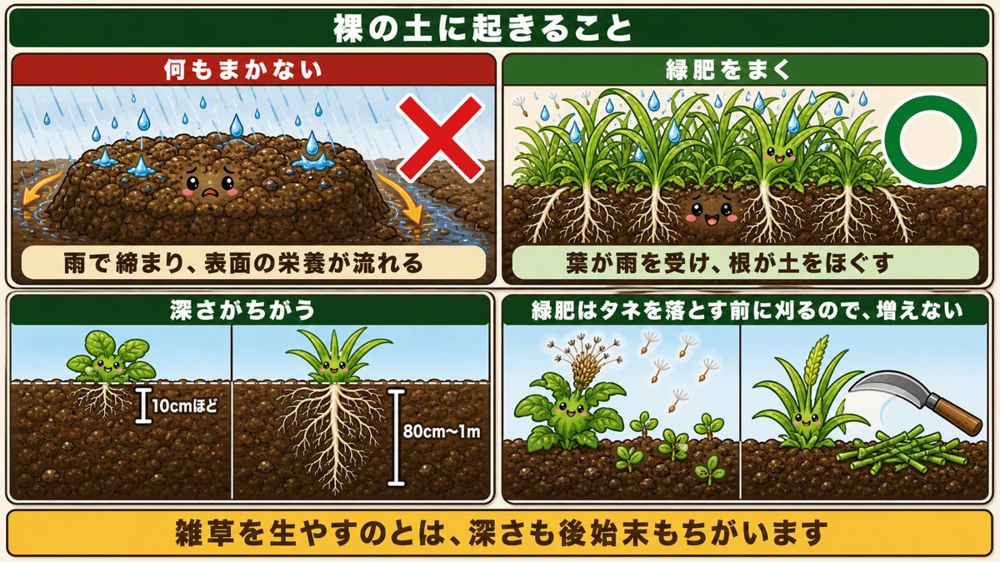
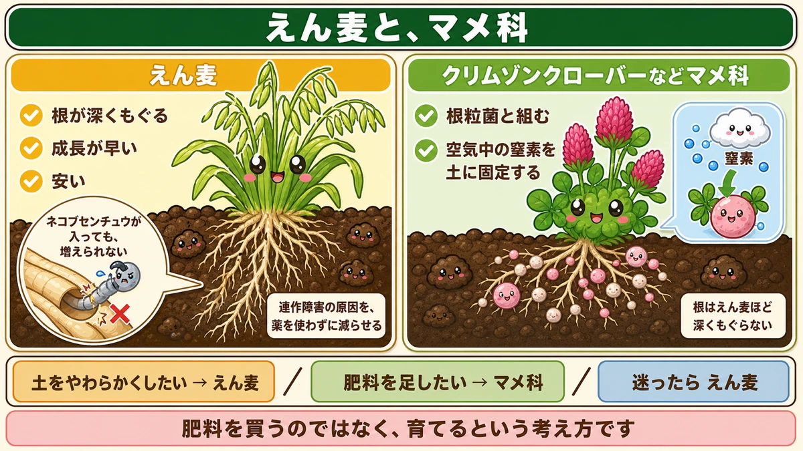
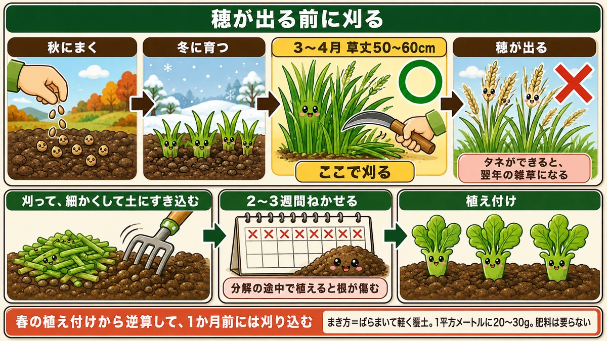

緑肥で土を作る｜えん麦・クローバー・マリーゴールドの選び方、まき方、刈る時期とすき込み方
どうも、8150（えいこう）です🌱 家庭菜園歴8年、理科の教員免許を持っていて、有機・無農薬で野菜を育てています。
📖 この記事の目次
この記事で分かること
- 緑肥（りょくひ）は、食べるためではなく、畑の土をよくするために育てる植物です。育てたあとは、刈って畑に戻します。
- 冬のあいだ空いている畝に、麦やクローバーのタネをまいておくと、畑を遊ばせずにすみます。
- 麦の仲間（えん麦、ライ麦、大麦など）は根を深く張り、マメ科（クリムソンクローバー、ヘアリーベッチ）は空気中の窒素を土に取り込みます。
- 刈る時期は、タネができる前が基本です。タネを落とさせると、翌年、畑じゅうに生えてきます。
- 刈ったあとは、すぐに野菜を植えず、分解が進むのを待ちます。待つ期間は、季節と材料でかなり違います。
- すき込むだけでなく、刈って野菜の株元に敷く、という使い方もあります。
- 主役はあくまで野菜です。緑肥が茂りすぎると、野菜の場所や日当たりを奪ってしまうので、育ちすぎないように管理します。
秋の野菜を片づけたあと、春まで空いたままの畝はありませんか。「何も植えないのはもったいないけれど、冬に育つ野菜も思いつかない」。そんな畝の使い道として、昔から使われてきたのが緑肥です。
緑肥というと、なんだか難しそうに聞こえますよね。でも、やることはとてもシンプルです。タネをまいて、育てて、刈って、畑に戻す。それだけです。
この記事では、緑肥の種類と選び方、まき方、刈る時期、すき込み方、そして気をつけたいことを、順番に書いていきます。説明が分かれているところは、両方の考え方を並べておきますね。

早見：緑肥の基本（ひと目で分かる目安）
緑肥とは
- 収穫を目的にせず、土をよくするために育てる植物
- 育てたあとは、刈って畑に戻す（すき込む、または敷く）
- 漢字で書くと「緑の肥料」
よく使われる種類
- 麦の仲間：えん麦、ライ麦、大麦、小麦など。根を深く張る。冬にまくことが多い
- マメ科：クリムソンクローバー、ヘアリーベッチなど。根に住む菌の力で、空気中の窒素を土に取り込む
- ソルゴー：夏に育つ背の高い緑肥。大きく硬くなる
- マリーゴールド：花を楽しみながら、土の中の線虫（せんちゅう）を減らす目的でも使われる
作業の流れ
- 空いた畝を平らにならす
- タネをまく（筋まき、またはばらまき）
- 土を戻して、鳥よけをする
- タネができる前に刈る
- 刻んで浅くすき込むか、株元に敷く
- 分解が進むのを待ってから、野菜を植える
緑肥とは、どんなものか
食べずに、畑に戻す植物
緑肥は、収穫して食べるために育てるのではなく、ほかの野菜が育ちやすい環境を作るために植える植物です。
育てたあとは、刈って畑の中に戻します。刈ったものは土の中で分解されて、土の一部になっていきます。肥料を買ってきて入れるのではなく、畑の中で育てた植物を、そのまま土に返す。これが緑肥の考え方です。
育てているあいだにも、役目がある
緑肥のよいところは、刈ってすき込んだあとだけではありません。育っているあいだにも、いろいろな役目があると説明されます。
- 根が土の中に伸びて、土をやわらかくする
- 畝の表面をおおって、雨で土が流れたり、固く締まったりするのを防ぐ
- 空いた畝を緑でおおうので、雑草が生えにくくなる
- 刈ったものは、肥料としても、敷きわらとしても使える
ただし、どれも「タネをまけば全部解決する」というものではありません。どんな緑肥を、どこに、いつまくかで、効き方はかなり違います。
空いた畝で起きること
冬のあいだ、何も植えずに畝を空けておくと、雨が土の表面に直接あたります。土の粒がくずれて、表面が固く締まったり、上のほうの土が流されたりすることがあります。
緑肥で畝をおおっておけば、雨が直接土にあたるのをやわらげてくれます。さらに、根が土の中に入りこんで、固くなるのを防いでくれる、というわけです。

何を育てるか（種類と選び方）
麦の仲間（えん麦、ライ麦、大麦など）
麦の仲間は、緑肥としていちばんよく使われる種類です。秋から冬にまいて、冬を越させ、春に刈る、という使い方が一般的です。
麦の仲間は、根を深くまで張ると説明されます。深く入った根が、土の中に水と空気の通り道を作り、水はけをよくする、という考え方です。
刈ったあとの麦わらは、夏野菜の株元に敷く「敷きわら」としても使えます。わらを手に入れるために麦を育てる、という人もいます。
マメ科（クリムソンクローバー、ヘアリーベッチ）
マメ科の植物の根には、根粒菌（こんりゅうきん）という菌が住んでいます。この菌が、空気中の窒素を、植物が使える形に変えてくれます。だから、マメ科の緑肥をすき込むと、土に窒素を足すことになる、と説明されます。
クリムソンクローバーは、春に赤い花を咲かせるので、見た目も楽しめます。ヘアリーベッチは、紫の花を咲かせます。
ホワイトクローバーは広がりやすい
同じクローバーでも、道ばたでよく見かけるホワイトクローバー（シロツメクサ）は、どんどん広がっていく性質があります。一度畑に広がると、取り除くのが大変です。畑で緑肥として使うなら、クリムソンクローバーのほうが扱いやすい、という説明があります。
ソルゴー（夏の緑肥）
ソルゴーは、夏に育つ背の高い緑肥です。根が深く入るという長所が紹介される一方で、大きく硬く育つので、家庭菜園では刈り取りやすき込みが大変だ、という声もあります。
ソルゴーは、背の高さを活かして、畑のまわりに植えて風よけや虫よけの壁にする、という使い方もされます。土に戻す緑肥としての使い方とは、目的が違うことを覚えておいてください。
マリーゴールド
マリーゴールドは、花を楽しみながら、土の中の線虫を減らす目的でも使われます。線虫は、野菜の根に入りこんで、根にこぶを作ったり、根を傷めたりする、とても小さな生きものです。
マリーゴールドを育てると、線虫の数（密度）を下げる効果が期待できる、と説明されます。ただし、「完全ではない」「少し軽減する」という言い方をする人もいます。線虫がいなくなるわけではない、と考えておくほうが安心です。
迷ったら、目的で選ぶ
- 土をやわらかくしたい、水はけをよくしたい：麦の仲間
- 土に窒素を足したい：マメ科（クリムソンクローバーなど）
- 敷きわらがほしい：麦の仲間
- 花も楽しみたい：クリムソンクローバー、マリーゴールド
- 線虫が気になる：マリーゴールドなど（効果は「減らす」程度と考える）
どれか1つに決められないときは、麦の仲間から始めるのが分かりやすいと思います。
もうひとつ考えておきたいのは、刈る手間です。背が高く、茎が硬くなる種類ほど、刈ってすき込むのが大変になります。初めて緑肥を育てるなら、手で刈れる大きさのものを選んで、1本の畝から始めてみるのがおすすめです。慣れてきたら、目的に合わせて種類を増やしたり、麦とマメ科を組み合わせたりしてみてください。
作業の手順
手順1：まく場所を決める
まずは、春まで空いている畝を選びます。春に何を植えるかも、あわせて考えておきましょう。
あとで書きますが、緑肥の種類によっては、刈ったあとにタネを直接まく野菜の芽が出にくくなることがあります。春に苗を植える畝なのか、タネをまく畝なのかを決めておくと、緑肥を選びやすくなります。
手順2：土を平らにならす
前の野菜の残りや大きな石を取り除いて、畝の表面を平らにならします。平らにしておくと、タネをまいたときに深さがそろって、芽がそろいやすくなります。
手順3：タネをまく
まき方は、大きく分けて2つあります。
- 筋まき：畝に浅い溝（筋）をつけて、そこにタネを並べるようにまく。15cm間隔くらいで筋をつける例がある。芽がそろって、見た目もきれい
- ばらまき：畝全体に、タネをぱらぱらとまく。手軽で早い
どちらでも育ちます。きちんとやりたいなら筋まき、手軽にすませたいならばらまき、と考えてください。マメ科の緑肥も、麦と同じまき方でまけます。
手順4：土を戻して、鳥よけをする
タネをまいたら、まわりの土を戻して、軽くかぶせます。麦の仲間のタネは、鳥に食べられやすいので、不織布やネットをかけて鳥よけをしておくと安心です。
手順5：寒い時期は、タネを多めに
寒くなってからまくと、芽が出にくくなります。遅い時期にまくときは、タネを多めにまいて、不織布などで保温してあげる、という説明があります。
手順5の補足：遅めにまいても育つことがある
えん麦を11月の後半にまいて、冬の日当たりがあまりよくない場所だったのに、春にはしっかりした大きさに育っていた、という例も紹介されています。「もう遅いかな」と思っても、あきらめずにまいてみる価値はあります。ただし、寒い地域では芽が出ないまま冬になることもあるので、地域の気候に合わせて考えてください。
手順6：育てているあいだの管理
緑肥は、野菜ほど手がかかりません。ただし、次の点は見ておきましょう。
- となりの野菜に、かぶさるほど茂っていないか
- 野菜の日当たりや風通しを悪くしていないか
- 花が咲きそうになっていないか（刈る時期が近い）
緑肥はあくまで脇役です。茂りすぎて野菜が小さくなってしまっては、本末転倒です。

手順7：タネができる前に刈る
刈る時期は、緑肥でいちばん大事なポイントです。
花が終わってタネができてしまうと、タネが畑に落ちて、翌年、まいた覚えのない麦やクローバーが畑じゅうに生えてきます。緑肥が雑草になってしまうんですね。
また、タネや実ができはじめると、植物の栄養がそちらに移っていき、刈ったときの肥料としての効果が十分に出なくなる、という説明もあります。
刈る時期の目安は、説明によって少しずつ違います（あとで書きます）。「タネができる前に刈る」という点だけは、どの説明にも共通しています。
手順8：短く刻んで、浅くすき込む
刈った緑肥は、地面の近くで刈り取り、短く刻んでから、土に浅くすき込みます。長いままだと、分解に時間がかかります。
手順9：分解が進むのを待つ
すき込んだ直後に野菜を植えるのは、避けたほうが安心です。土の中で緑肥が分解されている途中は、野菜の根に悪い影響が出ることがあるからです。
待つ期間は、季節や材料でかなり違います。冬越ししたえん麦を春にすき込む例では、2か月ほどあればほぼ分解が終わる、という見込みが語られています。一方、夏に、収穫後のとうもろこしの茎や葉を土に戻す例では、2週間ほど寝かせています。
春に植えたい野菜があるなら、そこから逆算して、早めに刈ってすき込んでおくのがコツです。
手順10：春の野菜を植える
分解が進んだら、いよいよ春の野菜を植えます。ヘアリーベッチを育てたあとの畝は、タネを直接まく野菜の芽が出にくくなる、という注意があります。そういう畝には、苗から育てる野菜を植えるようにしましょう。
すき込まずに使う方法
緑肥は、必ず土にすき込まなければいけない、というわけではありません。
刈って、株元に敷く
刈った麦やクローバーを、野菜の株元に敷いておく使い方があります。敷きわらや草マルチの代わりになって、雨の泥はねを防いだり、土の乾燥をやわらげたりしてくれます。
特に、麦の仲間を刈ったわらは、夏のトマトなどの株元に敷くのに便利です。
刈った草を、その場に置いておく
耕さずに育てる畑では、刈った草を畑の外に持ち出さず、そのまま横に置いておく、というやり方もあります。置いた草は、ゆっくり分解されて、土に戻っていきます。
根を残しておく
刈るときに根を抜かずに残しておくと、根は土の中で分解されて、土に戻っていきます。麦の仲間は、根を残しておくと、またそこから伸びてくることもあります。
穂だけを切って、もう少し育てる
麦の穂が出てきたけれど、まだ野菜を植えるまでに時間がある。そんなときは、穂だけを切り取っておくと、タネを落とさせずに、もうしばらく育てておける、という管理もあります。
全体を刈って敷きわらにするのとは、目的の違う作業です。タネを落とさせないことと、根や葉をもう少し育てることの両方をねらうやり方、と考えてください。
春にまいて、夏に自然に枯れさせる
えん麦の中には、春にまいて育てると、夏に向けて自然に枯れていくものがあります。これを、かぼちゃやすいかの畝に育てておいて、枯れたものをそのまま敷きわらの代わりにする、という例も紹介されています。
ただし、すべてのえん麦が同じように枯れるわけではありません。品種によって違うので、タネの袋の説明を確かめてください。
肥料が多すぎる畑では、持ち出す
これまで肥料をたくさん入れてきた畑では、緑肥に土の中の余分な肥料を吸わせて、刈ったものを畑の外に持ち出す、という使い方も紹介されています。この場合は、土に戻すことが目的ではありません。畑の状態によって、使い方を変えるという考え方です。
野菜と一緒に育てる使い方
緑肥は、空いた畝だけでなく、野菜のまわりに一緒に育てる使い方もあります。
にんにくのまわりにクローバー
にんにくの畝のまわりに、クローバーのタネをまいておく例があります。このとき、にんにくの畝そのものは避けて、まわりにまくようにします。主役はにんにく、クローバーは脇役、という位置づけです。
里芋やしょうがの畝のあいだに、えん麦
里芋やしょうがの畝と畝のあいだに、えん麦をまいてみる、という試みも紹介されています。
なすやピーマンの近くに、マリーゴールド
なすやピーマンの近くにマリーゴールドを植える例は、よく見かけます。ただし、マリーゴールドが元気に育ちすぎて、なすやピーマンが大きくならなかった、という反省も語られています。大きくなりすぎる前に、間引いたり、枝を切ったりして、野菜の邪魔にならないように管理しましょう。
茂りすぎたら、刈る
緑肥を先に育てておいたら、茂りすぎて野菜を植える場所がなくなってしまった、という例もあります。そのときは、植える場所の緑肥を刈り込んで、場所を作ります。刈ったものは、すき込んでも、株元に敷いてもかまいません。
緑肥のタネがないときは
緑肥のタネが手に入らない、間に合わなかった、という場合でも、似たことはできます。
前の野菜の残りを、刻んで戻す
収穫が終わった野菜の茎や葉を細かく切って、土にすき込んでおく方法があります。春に向けて土を準備するなら、11月の終わりから12月にかけて、前の野菜の残りを細かく切ってすき込んでおく、という説明があります。
土の中で分解された有機物は、土をやわらかくし、水はけや水持ち、通気性をよくする、と説明されます。ただし、病気にかかった葉や、線虫にやられてこぶのある根は、すき込まずに畑の外で処分してください。
土手や原っぱのマメ科の草を使う
緑肥を育てていない人は、土手や原っぱに生えているクローバーなど、マメ科の草を刈ってきて、同じように使うのもいい、という話もあります。刈った草を細かくして、畑にすき込みます。
ただし、タネがついた草を持ちこむと、畑に広がってしまうことがあります。刈ってくるなら、タネができる前のものにしましょう。
マリーゴールドを育てて使うときは
マリーゴールドは、花を楽しみながら育てられるので、緑肥のなかでも始めやすい植物です。
タネのまき方
- 雨の降った翌日など、土がしっとりしているときにまくと、芽が出やすい
- 浅すぎるところにまくと、乾いたり、雨で流れたりしやすい
- タネをまいたら土をかぶせて、手で軽く押さえ、水をやる
- タネからでなく、苗を買って植えてもよい
植える場所
夏野菜の近く、特になすやピーマンの近くに植える例がよく紹介されます。キャベツなどの近くに植える例もあります。
ただし、先に書いたように、マリーゴールドが育ちすぎると、野菜の日当たりや風通しが悪くなります。野菜からある程度離して植え、大きくなりすぎたら間引いたり、枝を切ったりしてください。
花が終わったら、土に戻す
花の季節が終わったマリーゴールドは、細かく切って、畝のあいだや、次に野菜を植える予定の場所にすき込む、という使い方があります。線虫が出ていない畑でも、最後には土の養分になる、と説明されます。
ただし、野菜が植わっている場所のすぐそばに埋めるのは避けましょう。分解するときの熱などが、野菜に影響することがあるからです。
気をつけたいこと
線虫にやられた根は、畑に戻さない
野菜の片づけのときに、根や葉を土にすき込む方法がありますが、根にこぶができている（ネコブセンチュウにやられている）根は、そのまま土にすき込まないように、という注意があります。線虫を畑に戻すことになってしまうからです。こぶのある根は、畑の外で処分しましょう。
肥料を重ねすぎない
緑肥をすき込んだうえに、たい肥や肥料、米ぬかなどを次々に入れていくと、土の中の肥料が多くなりすぎることがあります。米ぬかを入れて太陽熱で土を消毒したあとに、さらにたい肥や肥料を入れると多すぎるかもしれない、という説明もあります。何をどれだけ入れたかを、メモしておくと安心です。
種類の名前は、袋で確かめる
緑肥のタネは、同じ「えん麦」でも、いろいろな品種があり、目的が違うことがあります。線虫を減らす目的の品種もあれば、そうでないものもあります。買うときは、袋の説明をよく読んで、目的に合ったものを選んでください。
緑肥の1年の流れ（例）
緑肥を畑の1年の中にどう組みこむかを、例として並べておきます。地域や育てる野菜によって変わるので、目安として読んでください。
秋から冬
夏野菜を片づけたあとの、春まで空く畝に、麦の仲間やクリムソンクローバーのタネをまきます。鳥よけをして、冬を越させます。
春
花が咲くころ、タネができる前に刈ります。刻んで浅くすき込むか、株元に敷くために取っておきます。すき込んだら、分解が進むのを待ちます。
初夏
分解が進んだ畝に、夏野菜の苗を植えます。取っておいた麦わらは、トマトなどの株元に敷きます。
夏
夏野菜の近くでマリーゴールドを育てたり、空いた場所でソルゴーを育てたりします。育ちすぎないように、ときどき刈り込みます。
秋
夏の緑肥を刈って土に戻し、秋冬野菜の準備をします。そしてまた、空く畝には冬の緑肥をまく。このくり返しで、畑の土を少しずつ育てていきます。
失敗の見分け方
翌年、まいた覚えのない麦が生えてきた
刈るのが遅れて、タネが畑に落ちてしまった可能性があります。生えてきたものは、小さいうちに抜いてください。次の年は、タネができる前に刈るようにしましょう。
すき込んだあとに植えた苗の育ちが悪い
分解が終わらないうちに植えてしまった可能性があります。次からは、植える時期から逆算して、早めに刈ってすき込んでおきましょう。
春にまいたタネの芽が出ない
ヘアリーベッチなど、タネの発芽を抑える性質があると言われる緑肥のあとにまいた可能性があります。そういう畝には、苗から育てる野菜を植えましょう。
緑肥のとなりの野菜が小さい
緑肥やマリーゴールドが茂りすぎて、野菜の日当たりや風通し、栄養を奪っている可能性があります。緑肥を間引いたり、刈り込んだりして、野菜が育つ場所を確保してください。
ホワイトクローバーが畑じゅうに広がった
ホワイトクローバーは広がりやすい性質があります。広がった場所は、根ごと掘り取ります。畑で使うなら、クリムソンクローバーなどを選びましょう。
説明が分かれていること
いつ刈るか
- 花が咲いた段階で刈る、という説明
- マメ科は花が咲く前に刈る、という説明
- 花を楽しんでから、枯れる前に刈ればよい、という説明
- とにかくタネをつけさせない、という説明
共通しているのは「タネができる前」という点です。花を楽しみたいなら咲いてから、肥料としての効果を大切にしたいなら早めに、と目的で考えてください。
生のまま入れるか、乾かしてから入れるか
- 刈ったものを、生のまま土に入れてよい、という説明
- 乾かしてから入れたほうが、土の中で熱が出にくい、という説明
野菜がすでに植わっている場所に戻すのか、しばらく何も植えない場所に戻すのかで考え方が変わります。野菜が近くにあるなら、乾かしてからのほうが安心です。
線虫への効果の強さ
- 線虫の密度を下げる効果がある、という説明
- 虫が死滅すると言われている、という強い説明
- 完全ではないが少し軽減する、という説明
- マリーゴールドに線虫を撃退する効果はないが、嫌がる効果が期待される、という説明
生きた株を育てるのか、刈った茎や葉をすき込むのか、太陽熱での消毒と組み合わせるのかで、条件がかなり違います。「減らす手助けになる」くらいに考えておくのが無難です。
待つ期間
- 冬越ししたえん麦を春にすき込むなら、2か月ほどでほぼ分解する、という見込み
- 夏にとうもろこしの茎や葉を戻すなら、2週間ほど寝かせる、という例
季節も材料も違います。暖かい時期は分解が早く、寒い時期は遅くなります。
マメ科の緑肥で、肥料はいらなくなるか
- マメ科の緑肥を使えば、窒素の肥料はいらない、という強い説明
- クローバーで追肥の一部を省けるが、ほかの時期の追肥はする、という説明
野菜の種類、時期、緑肥の育ち方で変わります。肥料がまったくいらなくなる、とは考えないほうが安心です。
マリーゴールドとなす・ピーマン
- なすやピーマンの近くに植えるとよい、という説明
- 近くに植えると、かえって野菜が小さくなる、という反省
- 同じ人の中でも、年によって言うことが変わっている例
植える距離と、育ちすぎを止める管理しだいです。
よくある質問
Q. 緑肥と雑草は、何が違うのですか？
A. 雑草も、根で土をやわらかくしたり、刈って戻せば土に返ったりします。違いは、自分で種類を選べること、そしてタネを落とす前に刈ってしまえることです。雑草は、気づかないうちにタネを落として、翌年も同じ場所に生えてきます。
Q. 緑肥のタネは、どこで買えますか？
A. 園芸店やホームセンターの種売り場で、「緑肥用」として売られていることが多いです。同じ名前でも品種によって目的が違うので、袋の説明を読んで選んでください。猫草として売られている麦のタネを使える、という話もあります。
Q. 狭い家庭菜園でも、緑肥はできますか？
A. 畝1本からでもできます。全部の畝でやる必要はありません。まずは、春まで空いている畝を1本選んで、試してみてください。
Q. プランターでも緑肥はできますか？
A. プランターでの緑肥のやり方は、畑ほどくわしく紹介されていません。プランターの土は量が少ないので、刈ったものをすき込むと分解に影響が出やすい、ということも考えられます。まずは畑で試すのがおすすめです。
Q. 緑肥を育てたら、たい肥はいらなくなりますか？
A. 緑肥だけで、たい肥がまったくいらなくなる、とは言い切れません。ただ、緑肥をすき込んだうえに、たい肥や肥料をいつもと同じだけ入れると、多すぎることがあります。入れる量は、畑のようすを見ながら調整してください。
Q. 冬にまいた麦が、なかなか芽を出しません
A. 寒くなってからまくと、芽が出にくくなります。遅い時期にまくときは、タネを多めにまいて、不織布で保温する、という方法があります。鳥に食べられていないかも確かめてください。
Q. 刈るのが大変そうです
A. 麦の仲間やクローバーは、鎌や草刈りばさみで刈れます。背の高いソルゴーは、大きく硬く育つので、家庭菜園では大変だ、という声があります。初めてなら、麦の仲間かクローバーから始めるのがおすすめです。
Q. 緑肥の上に、すぐ野菜の苗を植えてもいいですか？
A. 刈ってすき込んだ直後は、分解の途中なので避けたほうが安心です。刈った草を株元に敷くだけなら、すき込むより影響は少なくなります。どちらにしても、野菜の近くに生の草を大量に埋めるのは避けましょう。
Q. 緑肥を育てると、土の中の悪いものを吸ってくれますか？
A. 麦が土の中のいろいろなものを吸う、という話が出ることはありますが、特定の有害なものが安全な量まで減る、という検査結果は確認できませんでした。土をよくする手段のひとつ、と考えてください。
Q. 緑肥をまいた畝で、冬のあいだにすることはありますか？
A. 基本的には、見守るだけで大丈夫です。鳥にタネや芽を食べられていないか、となりの野菜にかぶさっていないかを、ときどき確かめてください。春になって花が咲きそうになってきたら、刈る準備をしましょう。
Q. 緑肥を始める前に、決めておくことは？
A. 次の3つを決めておくと、迷わずに進められます。1つ目は、どの畝でやるか。2つ目は、春にその畝に何を植えるか（苗か、タネか）。3つ目は、刈ったものをすき込むか、敷くか。春の植えつけから逆算して、いつ刈るかの目安も決めておくと安心です。
Q. 緑肥を育てた畝に、春に何を植えるのがいいですか？
A. 麦の仲間を育てた畝なら、トマトやなすなど、苗から植える夏野菜が合わせやすいです。刈った麦わらを、そのまま株元に敷けるのも便利です。ヘアリーベッチを育てた畝は、タネを直接まく野菜の芽が出にくくなることがあるので、苗から植える野菜を選びましょう。
Q. 毎年、同じ畝で緑肥を育ててもいいですか？
A. 毎年クリムソンクローバーや大麦を育てている、という畑の例もあります。ただし、すべてがうまくいったわけではない、とも語られています。畝ごとに、何を育てたかをメモしておき、野菜の育ち方を見ながら続けるかどうかを決めてください。
学ぶ🔬 緑肥が土をよくするしくみ
ここからは、緑肥が土をよくするしくみについて、少しだけ深く書いておきます。読み飛ばしても大丈夫です。
根は、土を押し広げながら伸びる
植物の根は、先のほうから少しずつ伸びて、土の粒と粒のすき間に入りこんでいきます。細い根がたくさん伸びると、土の中に細かい通り道がたくさんできます。
さらに、役目を終えた根は、土の中で分解されて消えていきます。でも、根があった形のすき間は、しばらく残ります。このすき間が、水や空気の通り道になります。深くまで根が入っていれば、そのぶん深いところまで、水や空気が届きやすくなる、というわけです。
マメ科と根粒菌の助け合い
マメ科の植物の根を掘ってみると、小さなつぶつぶがついていることがあります。これが根粒（こんりゅう）で、中には根粒菌という菌が住んでいます。
根粒菌は、空気中にたくさんある窒素を、植物が使える形に変えて、マメ科の植物に渡します。そのかわりに、マメ科の植物は、葉で作った栄養を根粒菌に渡します。おたがいに助け合っているんですね。
だから、マメ科の緑肥を育ててすき込むと、空気中の窒素を、土の中に取り込むことになる、と説明されます。
分解されるとき、土の中で何が起きているか
すき込んだ緑肥は、土の中の小さな生きもの（微生物）によって分解されていきます。微生物は、緑肥を食べて増えるとき、自分の体を作るために、土の中の窒素も使います。
そのため、すき込んだ直後は、微生物が窒素を使ってしまい、野菜が使える窒素が一時的に少なくなることがある、と言われます。また、分解が盛んなときは、熱やガスが出ることもあります。すき込んでから少し待ってから植える、と言われるのは、このためです。
なぜ、タネができると肥料としての力が落ちるのか
植物は、花が咲いてタネや実を作りはじめると、葉や茎にたくわえていた栄養を、タネのほうへ送りはじめます。
タネができてから刈ると、栄養の多くはタネに移っていて、葉や茎に残っている栄養は少なくなっています。さらに、茎は硬く、分解しにくくなっています。若くてやわらかいうちに刈ったほうが、分解が早く、肥料としても効きやすい、と説明されるのは、このためです。
線虫の数を減らす、という考え方
線虫は、とても小さな生きもので、種類がたくさんあります。野菜の根に入りこんで害を与えるものもいれば、害のないものもいます。
緑肥やマリーゴールドで線虫を減らす、と言われるときも、どの種類の線虫に効くのかは、植物や品種によって違います。だから、「この緑肥をまけば、どんな線虫もいなくなる」とは考えずに、「減らす手助けのひとつ」と考えておくのがよいと思います。
土が「ふかふか」になるしくみ
畑の土をよく見ると、細かい粒がくっつきあって、小さな塊（だんご）になっているところがあります。このような土のつくりを、団粒構造（だんりゅうこうぞう）と呼びます。
緑肥や野菜の残りが土の中で分解されると、腐植（ふしょく）と呼ばれる、黒っぽい有機物ができます。この腐植や、微生物が出すねばねばした物質が、土の粒どうしをくっつける「のり」の役目をします。
小さな塊と塊のあいだには、大きなすき間ができます。大きなすき間は、余分な水を流して空気を通し、塊の中の小さなすき間は、水をたくわえます。だから、団粒構造の土は、水はけがいいのに、水持ちもいい、という一見むずかしい条件を両立できるんですね。緑肥で土がよくなる、と言われるのは、このしくみが関わっています。
まとめ
ここまで読んでくださって、ありがとうございます！
緑肥のポイントを、もう一度まとめておきます。
- 緑肥は、食べずに土をよくするために育てる植物。刈って畑に戻す
- 麦の仲間は根が深く、マメ科は窒素を土に取り込む
- ホワイトクローバーは広がりやすい。畑ならクリムソンクローバーを
- ソルゴーは大きく硬くなるので、家庭菜園では刈るのが大変
- まき方は、筋まきでもばらまきでもよい。鳥よけをする
- 刈るのは、タネができる前
- 刻んで浅くすき込み、分解が進むのを待ってから植える
- 刈って株元に敷く、根を残す、という使い方もある
- 線虫にやられた根は畑に戻さない
- 緑肥は脇役。野菜の邪魔にならないように管理する
緑肥は、冬のあいだ空いている畝を、春に向けて準備しておく方法です。
まずは、春まで空いている畝を1本だけ選んで、麦かクローバーのタネをまいてみてください🌾
えん麦のタネ
根が深くもぐって土をほぐし、ネコブセンチュウを減らします。迷ったらこれです。
![[商品価格に関しましては、リンクが作成された時点と現時点で情報が変更されている場合がございます。]](https://hbb.afl.rakuten.co.jp/hgb/56d21de3.ae31fd42.56d21de4.bc885a0a/?me_id=1381384&item_id=10000017&pc=https%3A%2F%2Fthumbnail.image.rakuten.co.jp%2F%400_mall%2Fyohonsha%2Fcabinet%2F10419213%2Fcompass1768461115.jpg%3F_ex%3D240x240&s=240x240&t=picttext "[商品価格に関しましては、リンクが作成された時点と現時点で情報が変更されている場合がございます。]")

三角ホー
ばらまいたあと、軽く土をかぶせるのに使います。立ったまま作業できます。

備中鍬
春に刈ってすき込むとき。若いうちのほうが分解が早いです。
![[商品価格に関しましては、リンクが作成された時点と現時点で情報が変更されている場合がございます。]](https://hbb.afl.rakuten.co.jp/hgb/56d752c3.3ce6fd3b.56d752c4.f8896826/?me_id=1209220&item_id=10002030&pc=https%3A%2F%2Fthumbnail.image.rakuten.co.jp%2F%400_mall%2Fhonmamon-r%2Fcabinet%2Fimg3%2Fw4580149745643.jpg%3F_ex%3D240x240&s=240x240&t=picttext "[商品価格に関しましては、リンクが作成された時点と現時点で情報が変更されている場合がございます。]")
くん炭（もみ殻）
緑肥と合わせると、通気性の改善が早く出ます。
![[商品価格に関しましては、リンクが作成された時点と現時点で情報が変更されている場合がございます。]](https://hbb.afl.rakuten.co.jp/hgb/56bc30bc.01c5b89d.56bc30bd.ee310357/?me_id=1231595&item_id=10000412&pc=https%3A%2F%2Fthumbnail.image.rakuten.co.jp%2F%400_mall%2Fplanto-iwa%2Fcabinet%2F2707.jpg%3F_ex%3D240x240&s=240x240&t=picttext "[商品価格に関しましては、リンクが作成された時点と現時点で情報が変更されている場合がございます。]")
あわせて読みたい